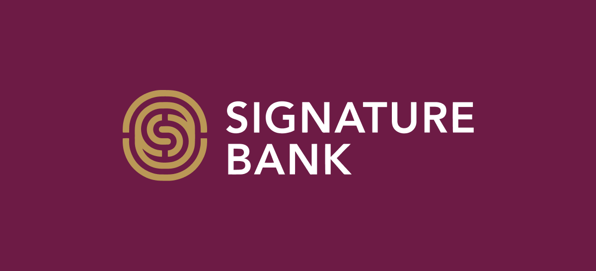
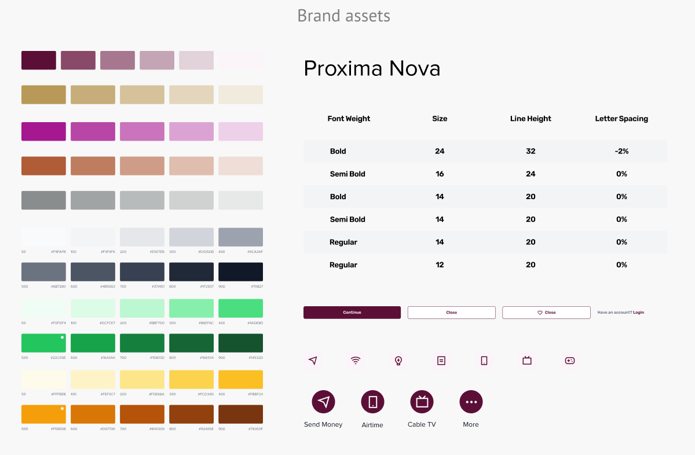
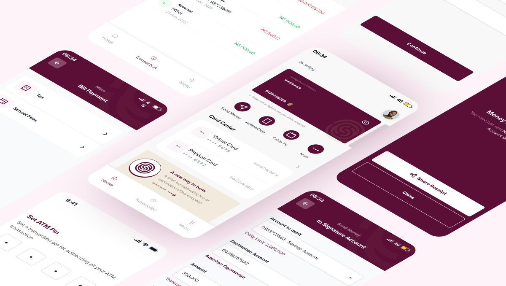
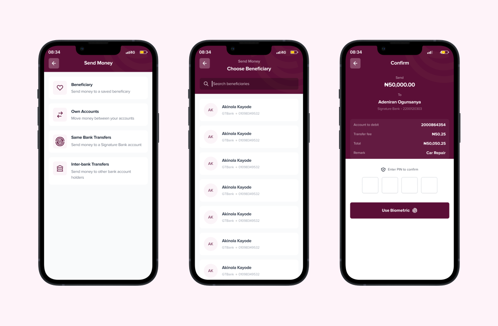
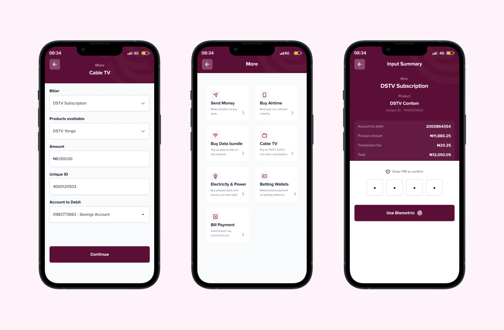
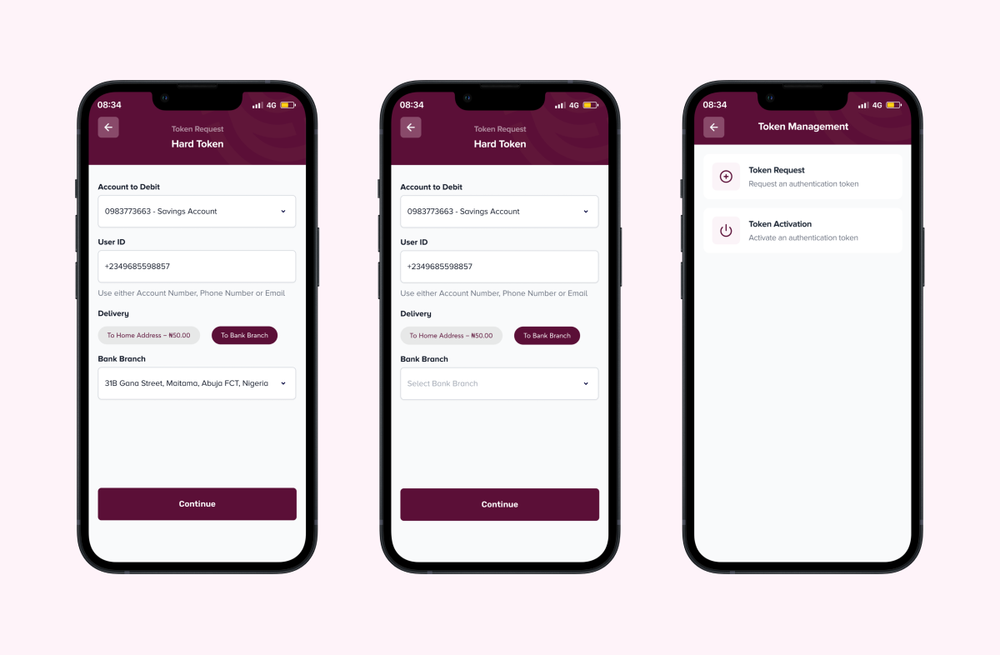

Designed the mobile app for Signature Bank's 2022 launch with Interswitch — account opening, cards, and everyday banking, built entirely without a branch visit.

As a product designer at Interswitch, I led the mobile experience for Signature Bank — launched in 2022 to empower Nigerians and businesses, with Interswitch enhancing its financial infrastructure.
The app was built to handle account opening, card requests, and account management entirely without a branch visit — critical to the bank's strategy of acquiring digitally savvy Nigerians as early adopters.
As a new bank, every touchpoint needed to feel consistent from day one. I built a UI kit aligned to Signature Bank's brand — extending beyond aesthetics into the in-app messaging and tone.

Onboarding chunks KYC and identity verification into manageable sections — users unlock enhanced account privileges as they progressively verify more, speeding account opening without compromising compliance.
The dashboard mirrors the same philosophy: fast access to the services people use most.

Transfers to any bank in Nigeria, designed for simplicity and speed — a seamless flow for sending funds to any destination.

Requesting and managing every card linked to an account, entirely in-app — no branch visit required.
Data, airtime, electricity, cable TV and more — settled in a few clicks, in minutes.

Tokens add two-step authentication for transactions above set limits. Rather than requiring a branch visit, users request a hard or soft token directly from the app.
